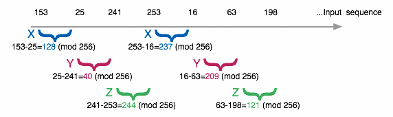
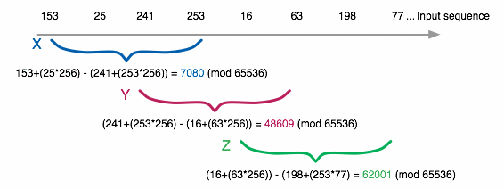
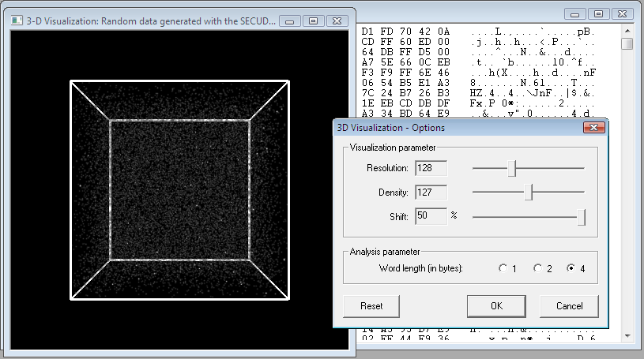
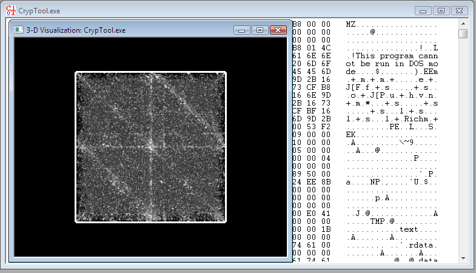

General Information
Random numbers are used extensively in cryptography, e. g. for generation of key material. It is among the more difficult tasks of a cryptographer to determine the quality of a random number source - statistically good random numbers are not necessarily cryptographically secure as well. If an adversary is able to exploit a structure within the stream of random numbers in order to deduce future values with a certain probability, the cryptographic keys generated from these random numbers are vulnerable to attack - even if the cryptographic algorithm itself is secure.
In order to measure the quality of random numbers various tests and criteria have been established that usually analyze the random number sequences numerically. Some of them have also been implemented in CrypTool.
In addition to numerical approaches, structures in random number sequences can also be visualized graphically. CrypTool implements an algorithm that is called phase space visualization which was first implemented by Dan Kaminsky of DoxPara in his program Phentropy (Part of the Paketto Keiretsu Toolkit).
Visualization Usage
Random number 3D analysis always applies to the CrypTool windows that was active during invocation of 3D visualization. Once all input data has been processed as described below, the resulting 3D cube is rendered in a CrypTool window. The cube can be manipulated freely by
Right click in the render window opens a pop-up-window, where you can change the display preference.
1. Box toggles the cube's bounding box.
2. The Preferences menu allows to modify the display options that are applied to the render window after closing the preference window:
Phase space visualization in CrypTool works as follows:
Within the word sequence the difference between two adjacent words is computed and interpreted as a coordinate in 3D space:
In this example the word length is 1, hence the difference between individual adjacent bytes of the input sequence is computed directly. The difference computation is done modulo the word co-domain, i. e. 256 for word size 1, 65.536 for word size 2 and 4.294.967.296 for word size 4.
Three adjacent difference values are now interpreted as X-, Y- and Z-coordinates within a cube of the word size's co-domain dimension. Once a pixel in 3D space has been determined, the brightness value of this pixel is increased by a fixed value that is called density. For this example the two coordinates P1 = (128, 40, 244) and P2 = (237, 209, 121) are calculated.
If a word size of e. g. 2 is used, the general procedure remains the same. The only difference is that adjacent bytes in the input sequence are interpreted as a word in Little-Endian format that is used for the usual difference calculation:
The resulting pixel has the coordinates (7080, 48609, 62001).
Phase space visualization is capable of showing structure in data sequences. A stream of true random data generates a uniform fog-like filling of the rendered cube:
If dots, clusters, lines or planes can be made out this is an indication for an inner structure of the input data.
Particularly interesting is the analysis of non-random data types, such as executable programs, office documents, PDF files, pictures, audio or text files. In most data formats characteristic patterns can be recognized. The following screenshot shows the phase space of a CrypTool executable in which planes and lines can be seen:
If a document contains many similar values (e. g. null bytes in program data), a high number of computed differences is close to zero, resulting in a corresponding 3D coordinate that is close to its origin. Without shifting the origin this would result in a cumulation in the cube's corners. Due to this observation in most cases it is advisable to shift the computed coordinates 50 % within the cube: clusters around the origin hence move to the center of the cube and often form geometric patterns which can be made out much easier this way.
If structures can be recognized within a phase space visualization, it is certain that no true random numbers are the source of the analysis. However this is not true vice-versa: Uniform fog-like filling of the cube cannot be taken as an indication for cryptographic secure random numbers!
In order to display the phase space analysis to the user CrypTool utilizes a slightly modified variant of the OpenGL based 3D rendering engine VolRen contained in the OpenQVis project.